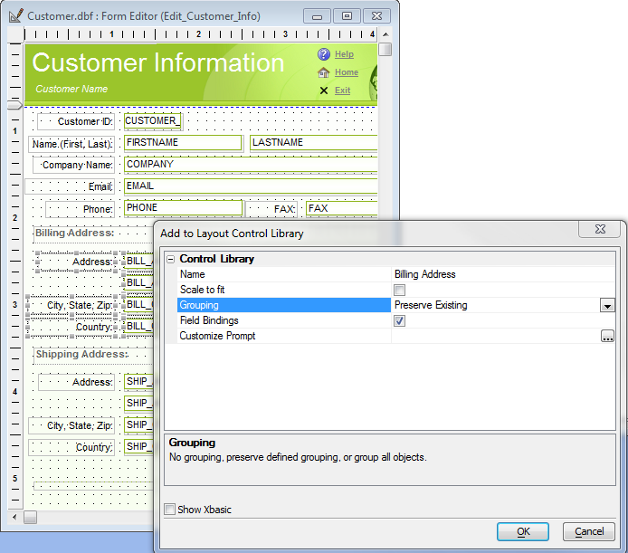
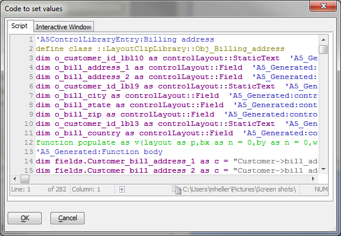
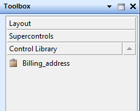

Form Editor Control Library
When you are editing a Layout (e.g. Form, Report, etc.), you can select one or more controls and then place them in a 'Control Library' on the Toolbox. Controls in the Control Library can be placed on any Layout.This video shows how you can add controls to the Control Library, and then use controls that you previously added to the Control Library.
Watch Video
For reference, the same information provided in the video is summarized below.
To create a new control library entry, select a block of controls, right-click, and pick Add selected controls to control library.... When the Add to Layout Control Library dialog appears, edit the name of the entry, check or uncheck Scale to fit depending on your preferences, pick your Grouping option, and check Field Bindings if you wish to automate mapping the fields in a new form.

You may also customize the prompts used for the field mapping code. Press OK to save the library entry, and if you check the Show Xbasic box you'll see the generated code, which you may edit if you wish.

Press OK to save the code as a library entry or cancel to quit the process.
After you save the entry, it will appear in the new Control Library section of the layout toolbox.

You can now use this block of controls in a new or existing form. Select the item, draw a rectangle in the form, and the block will appear. If there are bindings to map, the binding dialog generated previously will display. If the field names are the same as the original table, the initial bindings will be correct; otherwise, you may choose other fields for the new form.